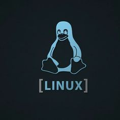

01 · ORIENTACIÓN
¿Qué quieres ejecutar?
Una recomendación inicial para tu caso. La versión del programa y sus complementos deben comprobarse por separado.

LinuxMate ESTUDIO DE MIGRACIÓNEncuentra tus aplicaciones, prepara un plan y aprende a moverte por Linux a tu ritmo.
Conectando con LinuxMate…
Compara opciones, formatos de instalación y alternativas de ArtCraft.
Equivalencia por función, no compatibilidad completa. Los logos pertenecen a sus proyectos y se cargan desde sus fuentes. Algunos programas de referencia también existen en macOS o en la web.
Escribe un programa por línea o pega una lista de winget list. También puedes añadirlos desde Equivalencias.
Elige una aplicación y su origen. Revisa el comando antes de abrir el gestor.
Elige cómo probar tus programas. Cada herramienta tiene un propósito y sus propios límites.
Una recomendación inicial para tu caso. La versión del programa y sus complementos deben comprobarse por separado.
Wineboot y WinBoat son herramientas distintas.
Abre este apartado para cargar las guías.
Consulta herramientas y recursos sin iniciar Wine, modificar prefijos ni arrancar máquinas virtuales.
Todavía no se ha comprobado este equipo.
Esta sección es una guía con progreso local. La copia se realiza en el explorador o en Respaldos.
Respalda documentos, fotos y proyectos en otro disco. Abre algunos archivos de la copia para comprobarlos.
Abre el disco desde el explorador y copia las carpetas que necesitas a tu carpeta personal. Conserva los originales. Si aparece bloqueado, cifrado o hibernado, vuelve a Windows para desbloquearlo o apagarlo completamente; no fuerces la escritura.
Usa la sincronización de tu navegador o exporta e importa los marcadores desde sus ajustes. Para contraseñas, usa el procedimiento oficial de tu navegador o gestor; no las pegues en el chat.
Comprueba teclado, impresora, sonido y Bluetooth. Ajusta los atajos y revisa las fuentes de tus documentos.
Empieza por las tareas que conoces de Windows.